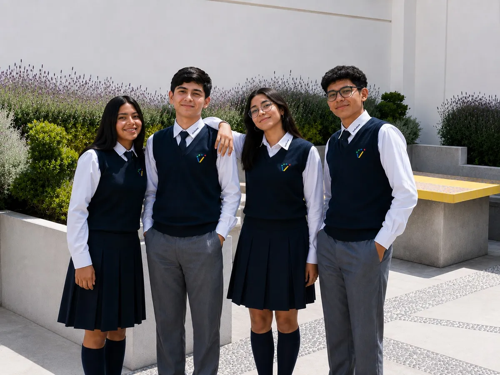
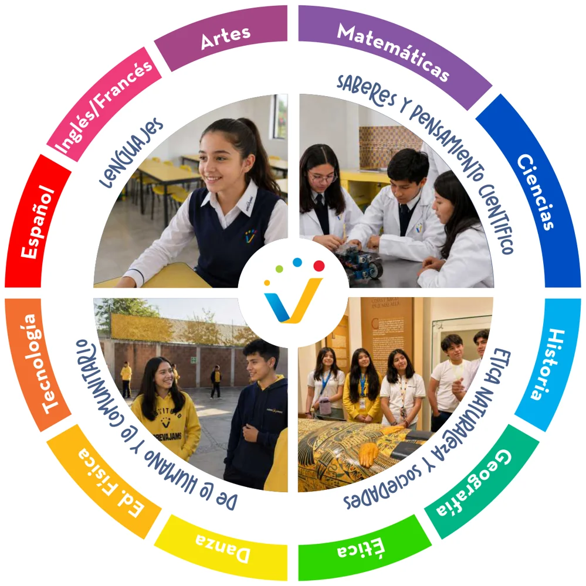

Español
Uso y conocimiento de las convenciones, estructuras y recursos del lenguaje para la comunicación, la investigación, la argumentación y la creatividad.
- Expresión en distintas situaciones
- Uso de plataformas digitales

Adolescentes críticos, responsables y con herramientas para el mundo digital: inglés certificado, francés, robótica y una sólida formación ética.
En Secundaria nuestros alumnos profundizan en el uso del lenguaje, las matemáticas y las ciencias con un enfoque STEAM y proyectos interdisciplinarios, mientras desarrollan su identidad, su autonomía y su capacidad de argumentar.
Además de inglés con certificación Cambridge, ofrecemos francés, el programa AutonoTech de computación y robótica, y experiencias como viajes internacionales y concursos académicos.

Nuestro plan de estudios se organiza en los campos formativos de la Nueva Escuela Mexicana, enriquecidos con los programas propios del Instituto.
Uso y conocimiento de las convenciones, estructuras y recursos del lenguaje para la comunicación, la investigación, la argumentación y la creatividad.
Competencias comunicativas con contenidos auténticos y globales que conectan con el mundo real.
Formación inicial en lengua francesa que amplía el horizonte cultural y la competencia plurilingüe.
Sensibilidad estética, expresión creativa y apreciación del arte como parte del desarrollo integral.
Pensamiento matemático con enfoque STEAM, con énfasis en la aplicación práctica y la resolución de problemas.
Pensamiento científico con enfoque STEAM que promueve la investigación y la solución de problemas.
Autoconocimiento, manejo emocional y resiliencia para los retos propios de la adolescencia.
Nuestro programa de computación y robótica para adquirir habilidades tecnológicas de forma práctica, creativa y responsable.
Construcción de la corporeidad, conciencia motriz y expresión artística en una formación disciplinada y saludable.
Análisis crítico de los procesos históricos para comprender la transformación de las sociedades.
Comprensión del espacio geográfico y la interacción entre las sociedades y su entorno natural.
Ciudadanos críticos y comprometidos, capaces de reflexionar éticamente y asumir responsabilidades.
Diseñamos experiencias que atienden los distintos estilos y ritmos de aprendizaje, para que cada alumno alcance su máximo potencial.
Permite a los alumnos aprender de manera activa, significativa y colaborativa, desarrollando habilidades para la vida real.
Integra ciencia, tecnología, ingeniería, arte y matemáticas para fomentar el pensamiento crítico, la creatividad y la resolución de problemas en contextos reales.
Vincula el trabajo académico con la participación en proyectos comunitarios, fortaleciendo el compromiso social y el aprendizaje significativo.
| Horario académico | Por confirmar |
|---|---|
| Horario extendido | 2:30 p.m. – 6:30 p.m. |
| Grupos | 14 a 16 alumnos |
De 2:30 a 6:30 p.m., con actividades lúdicas y formativas en un ambiente seguro y estimulante.
Acompañamiento docente en un espacio guiado y tranquilo para terminar los deberes con comprensión.
Servicio de comedor flexible, adaptado a las necesidades de cada familia.
Actividades que complementan el desarrollo físico, artístico y emocional de los alumnos.
Visitas escolares, eventos culturales y clases abiertas que acercan a los alumnos al arte, la historia, las tradiciones y la comunidad.


Inglés, con certificación Cambridge nivel B1–B2 (MCER), y francés como segunda lengua extranjera.
Es nuestro programa de computación y robótica: pensamiento computacional y robótica educativa para resolver problemas reales.
Trabajamos con grupos reducidos de 14 a 16 alumnos.
Sí, de 2:30 a 6:30 p.m., con taller de tareas, comedor y actividades vespertinas.
Agenda un recorrido, conoce los salones y resuelve tus dudas con nuestro equipo.